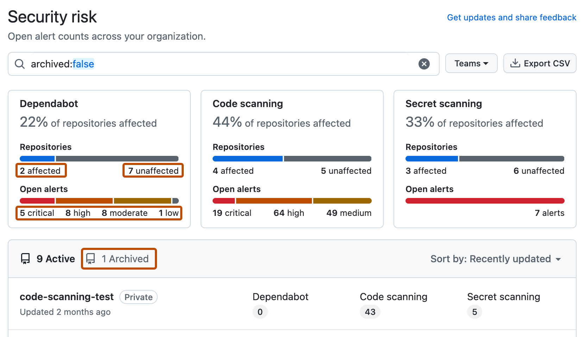
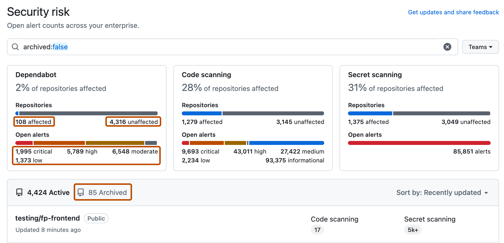

You can use security overview to see which teams and repositories are affected by security alerts, and identify repositories for urgent remedial action.
You can use the different views on your Security and quality tab to explore the security risks in your code.
These views provide you with the data and filters to:
For information about the Overview, see Viewing security insights.
On GitHub, navigate to the main page of the organization.
Under your organization name, click the Security and quality tab.
To display the "Security risk" view, in the sidebar, click Risk.
Use options in the page summary to filter results to show the repositories you want to assess. The list of repositories and metrics displayed on the page automatically update to match your current selection. For more information on filtering, see Filtering alerts in security overview.

Note
The set of unaffected repositories includes all repositories without open alerts and also any repositories where the security feature is not enabled.
Optionally, use the sidebar on the left to explore alerts for a specific security feature in greater detail. On each page, you can use filters that are specific to that feature to refine your search.
Optionally, use the Export CSV button to download a CSV file of the data currently displayed on the page for security research and in-depth data analysis. For more information, see Exporting data from security overview.
Note
The summary views ("Overview", "Coverage" and "Risk") show data only for default alerts. Secret scanning alerts for ignored directories and non-provider alerts are all omitted from these views. Consequently, the individual alert views may include a larger number of open and closed alerts.
You can view data for security alerts across organizations in an enterprise.
Tip
You can use the owner filter in the search field to filter the data by organization. For more information, see Filtering alerts in security overview.
Navigate to GitHub Enterprise Cloud.
In the top-right corner of GitHub, click your profile picture.
Depending on your environment, click Enterprise, or click Enterprises then click the enterprise you want to view.
At the top of the page, click the Security and quality tab.
To display the "Security risk" view, in the sidebar, click Risk.
Use options in the page summary to filter results to show the repositories you want to assess. The list of repositories and metrics displayed on the page automatically update to match your current selection. For more information on filtering, see Filtering alerts in security overview.

Note
The set of unaffected repositories includes all repositories without open alerts and also any repositories where the security feature is not enabled.
Optionally, use the sidebar on the left to explore alerts for a specific security feature in greater detail. On each page, you can use filters that are specific to that feature to refine your search.
Optionally, use the Export CSV button to download a CSV file of the data currently displayed on the page for security research and in-depth data analysis. For more information, see Exporting data from security overview.
Note
The summary views ("Overview", "Coverage" and "Risk") show data only for default alerts. Secret scanning alerts for ignored directories and non-provider alerts are all omitted from these views. Consequently, the individual alert views may include a larger number of open and closed alerts.
When you have assessed your security risks, you are ready to create a security campaign to collaborate with developers to remediate alerts. For information about fixing security alerts at scale, see Creating and managing security campaigns and Running a security campaign to fix alerts at scale.